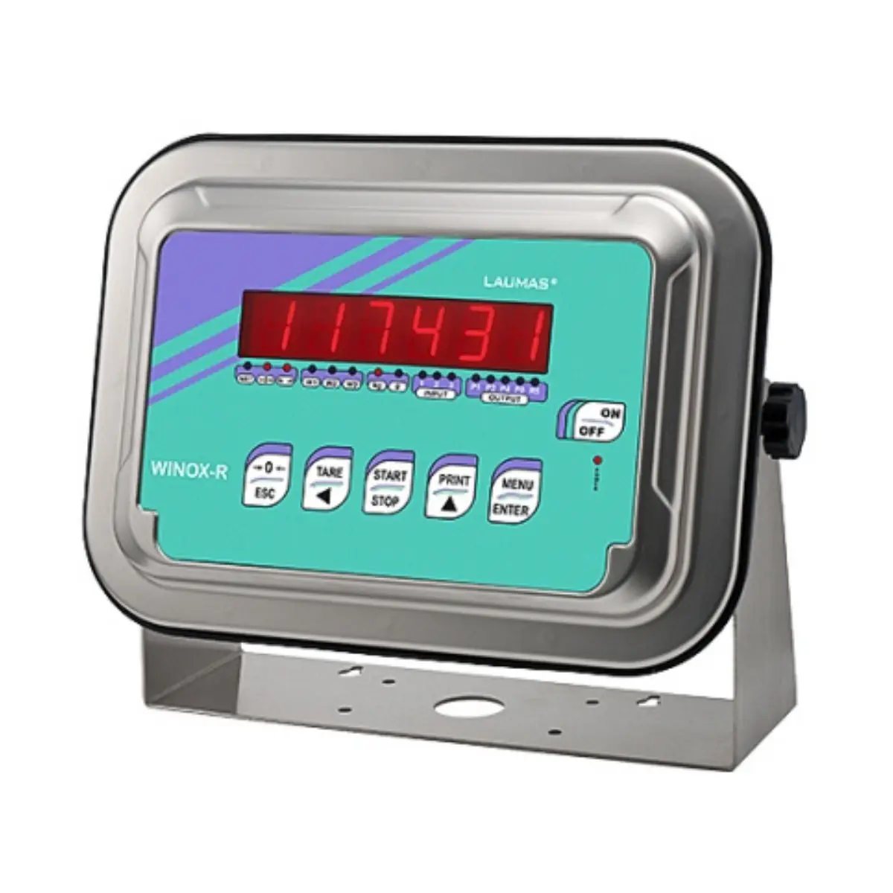
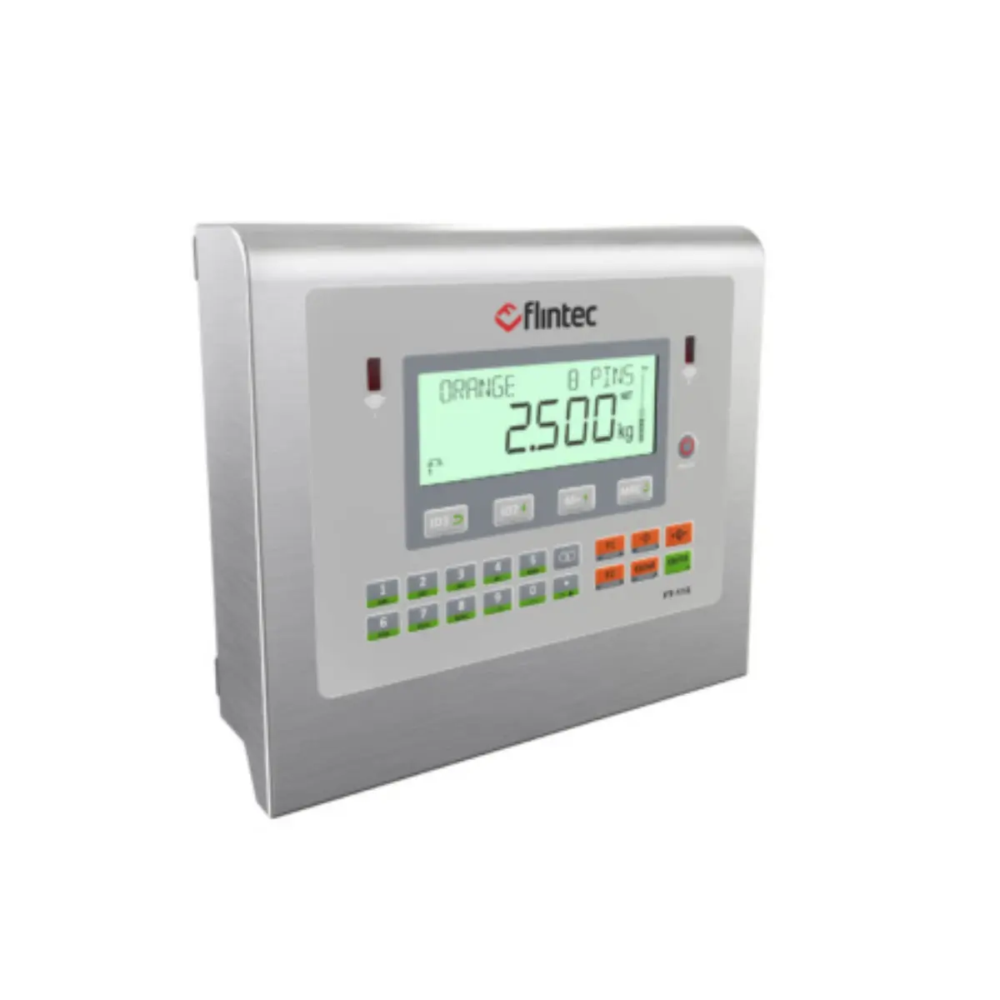

When it comes to ensuring precise and reliable measurements, a weighing scale indicator is an essential component in any weighing system. A weighing scale indicator, also known as a weight scale indicator, provides an accurate readout of the weight measured by the scale. These devices are crucial for various applications, from industrial and commercial settings to retail and laboratory environments. For those seeking the best digital weight indicator for weighing scales, it's important to consider features such as readability, user-friendly interface, and connectivity options. Modern digital weight indicators offer advanced functionalities, including data logging, remote monitoring, and seamless integration with other digital systems, making them indispensable for efficient and accurate weight management.


Digital indicators are essential in modern weighing systems, enhancing accuracy and ease of use. A weighing scale indicator, often referred to as a weight scale indicator, provides precise measurements and user-friendly interfaces, making it indispensable for various industrial and commercial applications. When searching for the best digital weight indicator for weighing scales, it's crucial to consider factors like readability, connectivity options, and durability. Advanced digital indicators offer high-resolution displays, multiple weighing units, and connectivity with other devices, ensuring seamless data integration and efficient workflow management. Investing in a reliable weighing scale indicator improves measurement accuracy and enhances overall operational efficiency.
Optional


When it comes to ensuring accuracy and efficiency in large-scale weighing operations, a weighing scale indicator is an indispensable tool. Often referred to as a weight scale indicator, these devices play a crucial role in converting the data from the weighbridge into readable and actionable information. Among the myriad options available, finding the best digital weight indicator for weighing scales can significantly enhance the reliability and performance of your weighing system. These advanced indicators come equipped with features like high-resolution displays, multiple connectivity options, and robust data management capabilities, making them ideal for industrial applications. Investing in a top-tier weighbridge indicator not only improves operational efficiency but also ensures precise and reliable weight measurements, critical for logistics, manufacturing, and transportation sectors.
Optional


When selecting a weighing scale for industrial or outdoor use, a waterproof weighing scale indicator is crucial for durability and reliability. A waterproof weighing scale indicator, such as the best digital weight indicator for weighing scales, ensures seamless operation in humid, wet, or dusty environments. These indicators are designed to withstand harsh conditions while providing accurate readings consistently. Whether you're managing inventory in a warehouse or processing goods in a bustling retail environment, investing in a waterproof weighing scale indicator ensures longevity and performance, making it a vital component for any business reliant on precise weight measurements.





Discover the efficiency of batching operations with our advanced weighing scale indicators. As a leading provider of industrial solutions, we offer state-of-the-art batching controllers designed to optimize your production processes. Our weighing scale indicators ensure precise measurements and seamless integration, making them the best digital weight indicators for weighing scales in the industry. Whether you're managing small batches or large-scale production, our batching controllers provide accuracy and reliability, enhancing productivity and reducing operational costs. Explore our range of weighing scale indicators today to streamline your operations and achieve unparalleled efficiency.


When it comes to ensuring safety in hazardous environments, an explosion-proof indicator is an essential component of any weighing system. Designed to prevent ignition of surrounding gases or dust, these robust weighing scale indicators are vital for industries such as chemical, oil, and gas. A high-quality explosion-proof weight scale indicator not only enhances safety but also ensures precise measurements, maintaining the accuracy and reliability required for critical applications. For those seeking the best digital weight indicator for weighing scales, explosion proof models offer advanced features and durability, making them the optimal choice for both safety and performance.


A weigh feeder is an essential component in modern industrial processes, providing precise measurement and control of material flow rates. Equipped with a sophisticated weighing scale indicator, these systems ensure accurate and consistent feeding of materials, enhancing operational efficiency. The weighing scale indicator is pivotal, offering real-time data and control, which is critical for maintaining the quality and consistency of the production process. Additionally, integrating the best digital weight indicator for weighing scales into your weigh feeder system guarantees superior accuracy and reliability, making it an invaluable asset for industries ranging from manufacturing to food processing. By utilizing advanced weight scale indicators, businesses can optimize their material handling and achieve significant improvements in productivity and product quality.


Filling controllers are essential components in various industrial processes, ensuring precision and efficiency in filling operations. Integrating a high-quality weighing scale indicator can significantly enhance the accuracy and reliability of these controllers. The weighing scale indicator is crucial for providing real-time data and monitoring the filling process, making it indispensable for achieving optimal results. Whether you are using a weight scale indicator for basic tasks or seeking the best digital weight indicator for weighing scales, the right choice can make a substantial difference in performance and productivity. By selecting an advanced weighing scale indicator, you can ensure precise measurements and maintain consistency, ultimately leading to improved operational efficiency and product quality.


When it comes to ensuring precise and reliable weight measurements, weighing scale indicators play a crucial role. These advanced weighing scale indicators are designed to integrate seamlessly into various weighing systems, providing accurate readouts and enhanced functionality.
A high-quality weight scale indicator is essential for maintaining consistency and reliability in measurement tasks across different industries. Among the top choices in the market, the best digital weight indicator for weighing scales offers user-friendly interfaces, robust construction, and exceptional accuracy. Whether used in industrial applications or retail environments, panel mount indicators deliver superior performance, making them a vital component in any weighing setup.


Enhance your retail operations with the latest in weighing technology by incorporating weighing scale indicators equipped with bill printing capabilities. These advanced systems streamline your checkout process by integrating weight measurements and immediate receipt generation.
Our weight scale indicator models are designed for precision and ease of use, ensuring accurate readings every time. Choose from our selection of the Best digital weight indicator for weighing scales, which offers seamless connectivity, intuitive interfaces, and robust durability. Elevate your business efficiency with state-of-the-art bill printing indicators that cater to all your weighing and transaction needs.


 WhatsApp Enquiry
WhatsApp Enquiry